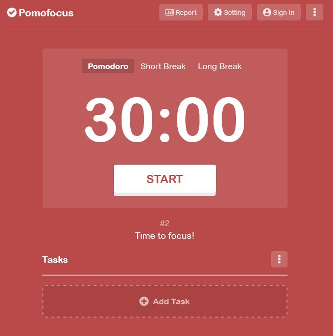
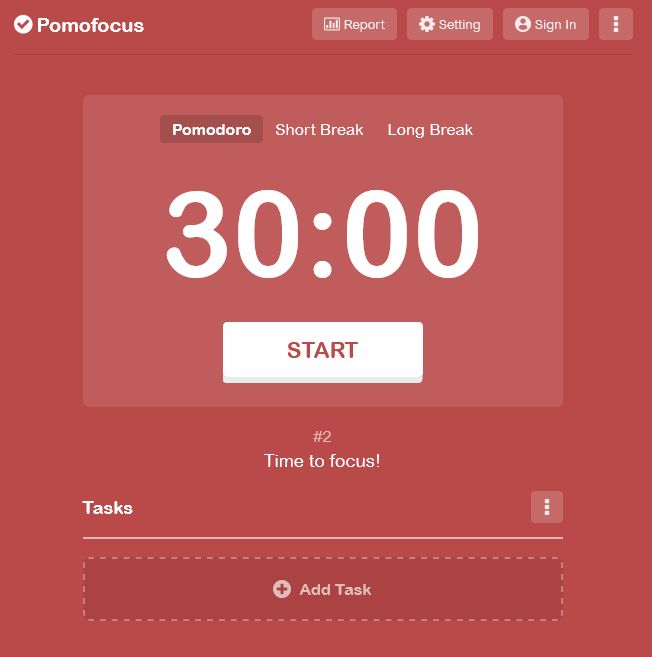

Pomodoro Timer & Todo List
Description of Project 1A productivity web application that combines the Pomodoro Technique with task management. This tool helps users maintain focus during work sessions while efficiently organizing their tasks..
with expertise in building responsive web applications and scalable mobile solutions. Passionate about creating efficient, user-friendly digital experiences that solve real-world problems. Combining strong technical skills with creative problem-solving to deliver high-quality software solutions.
Description of Project 1A productivity web application that combines the Pomodoro Technique with task management. This tool helps users maintain focus during work sessions while efficiently organizing their tasks..
A modern customer relationship management dashboard that provides businesses with real-time insights into customer data, sales performance, and team productivity. This interactive dashboard transforms complex business data into actionable visual insights through intuitive charts and analytics.

A secure web tool that creates strong, random passwords with customizable options. Users can specify length, character types, and instantly generate cryptographically secure passwords for enhanced online security..